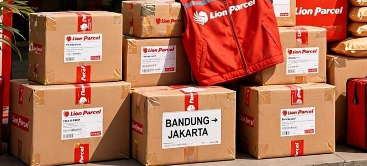

Ekspedisi Bandung Jakarta: Tarif Murah, Sehari Sampai & Bisa Jemput Gratis

Butuh ekspedisi Bandung Jakarta yang murah, cepat, dan aman? Jangan salah pilih! Jalur Bandung-Jakarta adalah jalur tersibuk untuk online shop, UMKM, dan kirim dokumen. Lion Parcel Bandung POS101 Nanjungmekar Rancaekek hadir sebagai solusi ekspedisi sehari sampai dengan harga mulai Rp 10.000-an saja.
🚚 Cek Ongkir Bandung-Jakarta Gratis!
Tanya tarif, estimasi, dan request jemput paket GRATIS area Rancaekek-Cicalengka. Chat sekarang!
💬 Chat WA 0851-8309-0486 - Cek Ongkir1. Kenapa Pilih Lion Parcel untuk Ekspedisi Bandung Jakarta?
Bukan sekedar kirim paket, kami kasih lebih:
- Sehari Sampai (ONE DAY SERVICE): Paket Bandung dikirim hari ini, besok sudah sampai Jakarta untuk layanan YES. Cocok untuk dokumen penting & makanan.
- Tarif Mulai 10 Ribu: Lebih murah dari ekspedisi lain untuk paket kecil 1kg. Ada diskon khusus untuk UMKM dan reseller Jakarta.
- Bisa COD & Asuransi: Untuk penjual online, kami melayani Cash On Delivery Bandung-Jakarta, dana cair cepat.
- Jemput Gratis: Tidak sempat ke counter? Kami jemput gratis untuk area Rancaekek, Cicalengka, Majalaya, Cileunyi. Minimal 1 paket saja!
- Paket Besar Bisa: Lion Parcel melayani BIG PACKAGE hingga ratusan kilo, cocok untuk kirim karpet, mesin, atau pindahan kecil Bandung-Jakarta via darat.
2. Estimasi & Tarif Ekspedisi Bandung Jakarta Terbaru 2026
Berikut estimasi pengiriman dari counter kami:
- REG (Reguler): 2-3 hari kerja - Paling ekonomis
- YES (Yakin Esok Sampai): 1 hari kerja - Paling laris Bandung-Jakarta
- ONS (One Night Service): Same day untuk Jakarta pusat (syarat & ketentuan)
Tarif akurat tergantung berat, dimensi, dan kecamatan tujuan di Jakarta. Silakan chat WA untuk cek ongkir akurat Bandung-Jakarta sesuai alamat lengkap Anda, gratis!
📍 Lokasi Counter Ekspedisi Bandung Jakarta - POS101
Jl. Raya Barat Cicalengka RT 1 RW 1, Nanjung Mekar, Rancaekek, Kabupaten Bandung. Buka Senin-Minggu 08.00-20.00 WIB.
3. Cara Kirim Paket Bandung ke Jakarta
- Foto paket + alamat tujuan Jakarta
- Chat WA 0851-8309-0486 untuk cek ongkir
- Pilih layanan REG / YES / ONS
- Paket dijemput kurir atau drop ke counter Rancaekek
- Dapat resi dan bisa tracking real-time
Kesimpulan
Untuk ekspedisi Bandung Jakarta yang cepat, murah, dan terpercaya, percayakan pada Lion Parcel Bandung POS101 Nanjungmekar. Kami buka setiap hari sampai malam, siap jemput paket Anda, dan melayani pengiriman retail maupun grosir. Hubungi kontak kami sekarang untuk cek tarif terbaik rute Bandung-Jakarta!
Nama Agen: Lion Parcel Bandung POS101 Nanjungmekar Rancaekek
Jam: Senin–Minggu, 08.00–20.00 WIB
Alamat: Jl. Raya Barat Cicalengka RT 1 RW 1, Nanjung Mekar, Rancaekek
WA: 0851-8309-0486
Layanan: Ekspedisi Bandung-Jakarta Reguler, YES, ONS, Big Package, COD